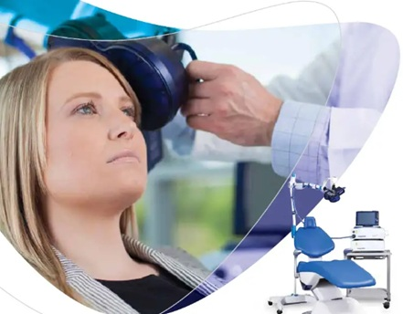
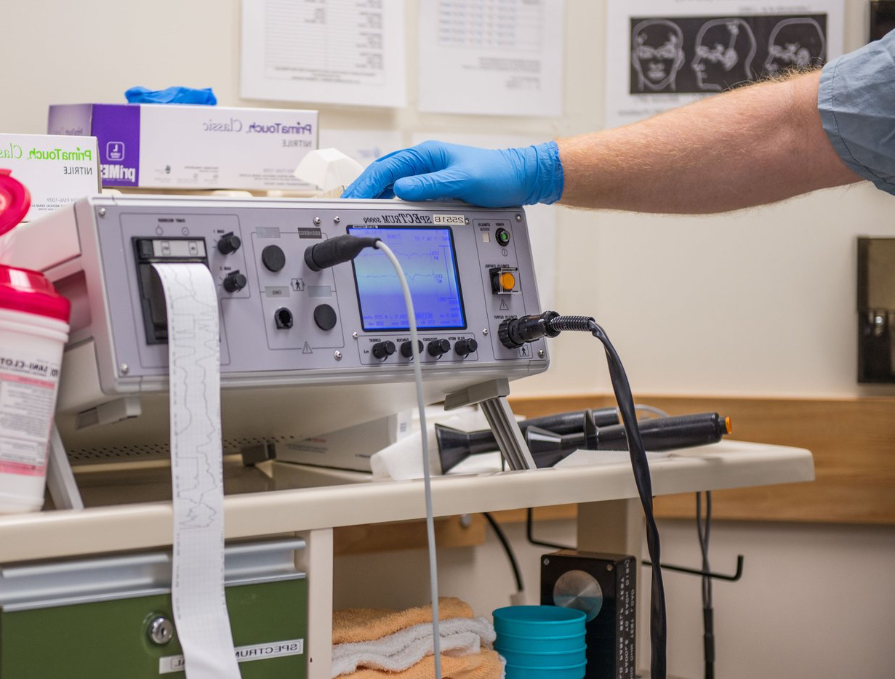

Patient-centred care
Every treatment pathway is tailored to the individual — with shared decision-making, clear consent, and longitudinal follow-up.
Central and North West London NHS Trust
We are looking for consultant psychiatrists to partner with our neuromodulation service as we expand our private practise capabilities. If you would like to be able to offer your patients a wide range of nuromodulation treatments, contact us to see whether you would be eligible to apply to practising privileges. You continue to have oversight of your patients, safe in the knowledge that treatments are being delivered to the highest of standards. We offer regular feeback and updates, and are even able to able to undertake standerdised assessments.

Our mission
The Northwick Park Neuromodulation Service sits at the intersection of psychiatry and neuroscience — delivering evidence-based treatments for patients who have not responded adequately to medication or psychological therapies.
Every treatment pathway is tailored to the individual — with shared decision-making, clear consent, and longitudinal follow-up.
Our protocols reflect current guidelines and emerging research, ensuring patients receive treatments with a robust evidence base.
Psychiatrists, nurses, anaesthetists, and technicians work together in a supportive, multidisciplinary environment.
Opportunities to contribute to audit, quality improvement, and academic collaboration within a major NHS teaching trust.
Treatments on offer
We offer a comprehensive suite of neuromodulation therapies for treatment-resistant depression and related conditions.

Repetitive Transcranial Magnetic Stimulation
Focal magnetic pulses stimulate targeted cortical regions — typically the dorsolateral prefrontal cortex — to modulate neural circuits involved in mood regulation.

Electroconvulsive Therapy
A brief, controlled seizure induced under general anaesthesia to produce rapid and robust antidepressant effects — particularly valuable in severe or life-threatening depression.
Transcranial Direct Current Stimulation
Low-intensity direct current applied via scalp electrodes to gently shift cortical excitability — an accessible, well-tolerated adjunct or standalone treatment.

Consultant Psychiatrist
Consultant Psychiatrist in General Adult Psychiatry with recognised expertise in ECT. He has led the service since 2008.

Clinical Director
Local clinical director and experienced clinical psychologist who works with patients with complex needs.

Registered Nurse
Experienced nurse in older adult and liaison psychiatry, qualified to deliver ECT.

ECT Service Lead
Experienced older adult nurse, ECT service lead, and our lead rTMS practitioner.

Registered Nurse
Experienced psychiatric nurse trained to deliver rTMS and lead for tDCS.

Older Adult Matron
Experienced rTMS practitioner.

Consultant Psychiatrist
Highly expert old age psychiatrist and information governance lead for the service.

Consultant Psychiatrist
General Adult psychiatrist experienced in crisis intervention.

Business Manager
Qualified accountant and service business manager, responsible for onboarding psychiatrists requesting practising privileges.

Operational Lead
Operational lead for the service, a qualified GP who is also dual qualified in older and general adult psychiatry.

Operational Manager
Qualified occupational therapist and operational manager for the service.
Get started
Take the next step towards joining the Northwick Park Neuromodulation Service. We welcome enquiries from psychiatrists interested in expanding their practice into brain stimulation therapies.
Replace with your service contact email before publishing.
Send a brief email outlining your background and area of interest.
Meet the clinical lead to discuss the service, pathways, and expectations.
Complete onboarding and receive practising privileges within the trust.